How a stock NerdQAxe++ Bitcoin miner — bricked, debugged, and rebuilt from source — became a living, Mehrunes-Dagon-adjacent altar.
It started as a small solo Bitcoin miner in a box and ended as a glowing, Oblivion-like gate that streams molten lava, counts the hours it has spent in the abyss, and — should it ever beat astronomical odds — flares to life screaming SIGIL FOUND. This is the whole journey: every brick, every wrong color, and every line of custom firmware.
The NerdQAxe++ is a desktop solo miner: four BM1370 ASICs, WiFi, a little color screen, and open-source ESP-Miner firmware running on an ESP32-S3. Out of the box it was already hashing — but it shipped on old firmware and was mining to the previous owner's wallet.
Step one was a firmware update. Step two was a mistake: uploading a www.bin web-assets package to a running device through the web UI. The screen went black, the device dropped off the network, and it was bricked.
"well. it looks fucked.. thanks for that"
Recovery meant going around the web UI entirely — straight to the silicon over USB with esptool. Hold BOOT, flash the complete factory image at 0x0, erase the corrupted NVS, reflash clean. After a couple of frozen attempts and a full chip erase, the miner came back from the dead. Lesson learned, and a much better understanding of how the thing boots.
0x0, nothing is permanently bricked.With stock firmware restored, the display was wrong: tiny, off-center, mirrored. This particular unit is the "big screen" variant — a 3.5″ 480×320 ST7796 panel — but the stock firmware is built for the small 1.9″ 170×320 panel. The vendor never published their source; they only ship pre-built binaries.
So the only way forward was to build the firmware from source and teach it about the real panel: correct resolution (480×320), zero gap offset, fixed mirror axes, and eventually swapping in the proper ST7796 driver. A Docker-based ESP-IDF toolchain made the build reproducible.
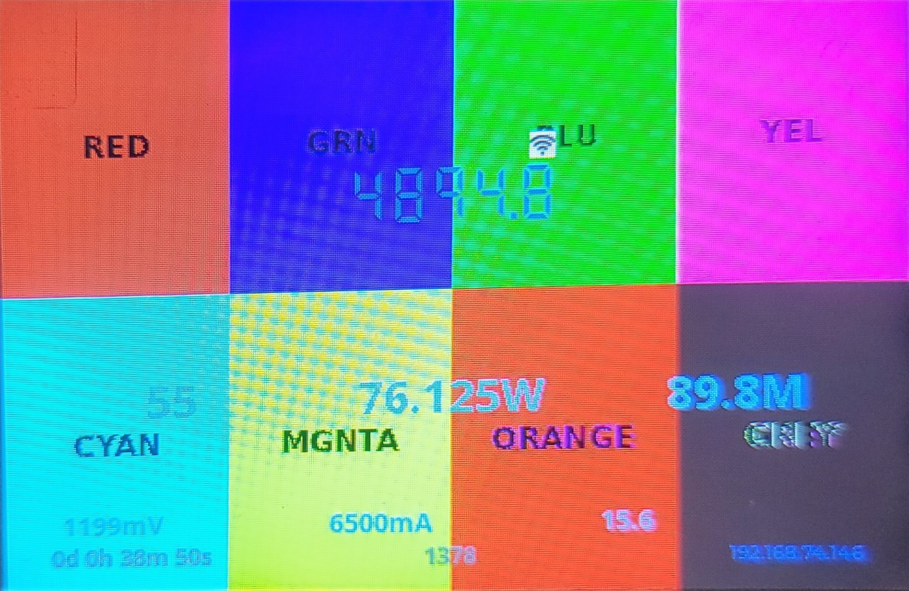
Getting the panel to show correct colors was the hardest part of the entire project — a three-layer bug that took real detective work and a lot of photos.
The first themed build came up drenched in blue and purple, with pink and green text. A pure orange background was rendering as blue.
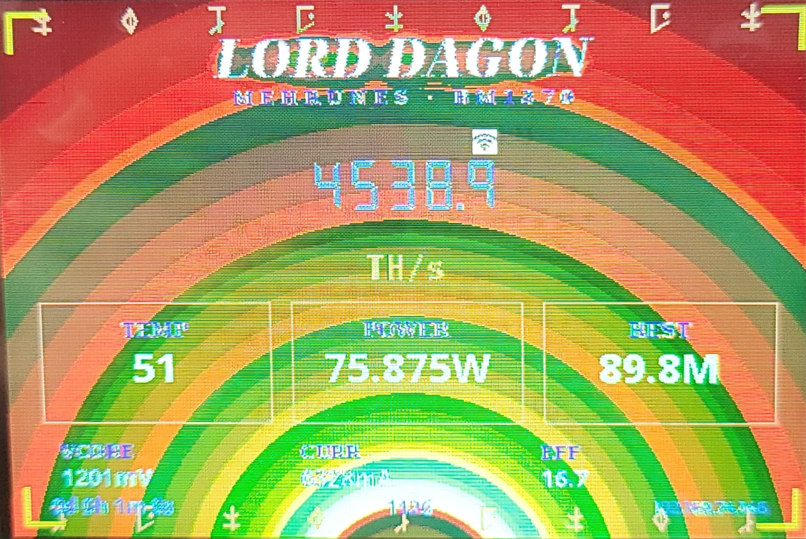
Flat color blocks hide byte-order bugs (a constant value just becomes a different constant). The fix was to flash a diagnostic card with gradients — especially a black→white grey ramp. A smooth ramp showing rainbow stripes means the 16-bit pixel bytes are swapped.
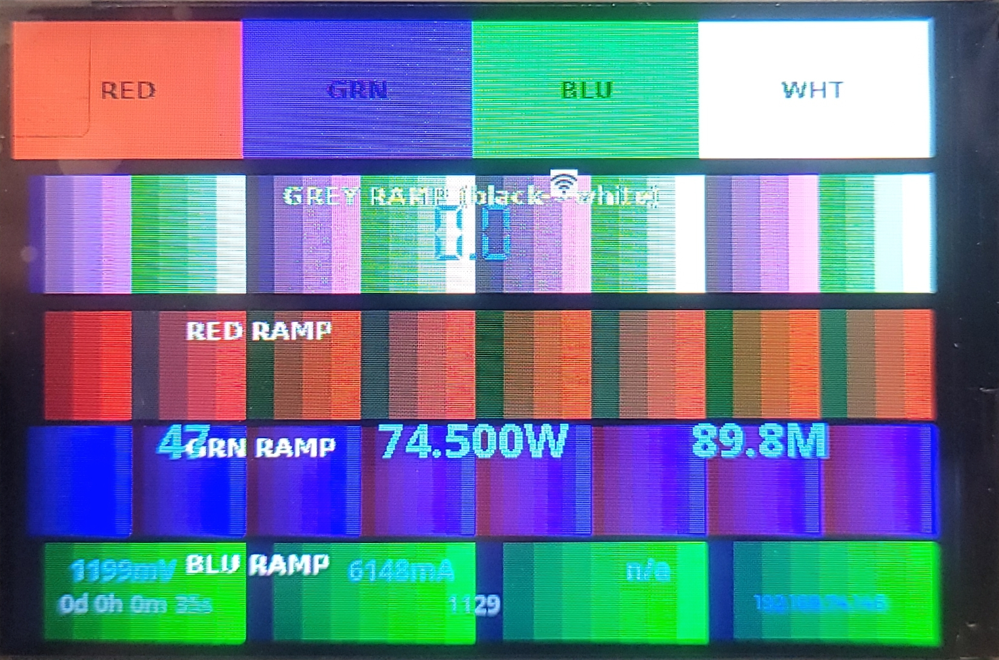
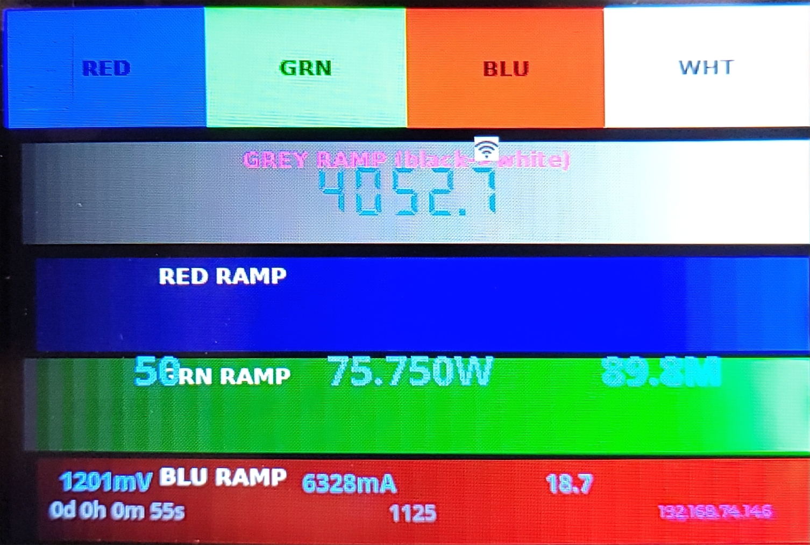
The full diagnosis, layer by layer:
| Layer | Fix |
|---|---|
| 16-bit byte order (rainbow gradients) | LV_COLOR_16_SWAP = 1 + big-endian image encoding |
| Red/Blue channel swap (BGR panel) | rgb_ele_order = BGR |
| Near-black banding / splotch | lift the black floor to ~#100a0c |
With all three solved, the molten palette finally rendered the way it was designed:
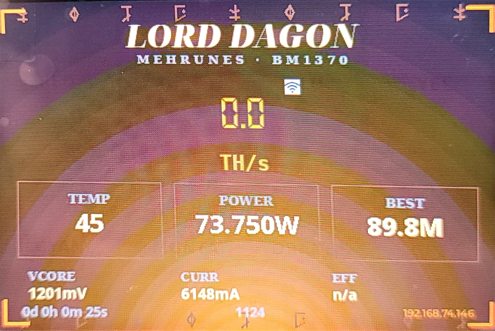
With the canvas working, the fun began. The brief: a look inspired by Mehrunes Dagon — a Daedric prince of destruction. Molten red and orange, Daedric-style runes, Oblivion-like fire.
The first pass was a procedural mockup — title, glowing hashrate, rune-framed stat panels — rendered at the exact 480×320 panel size so the layout could be judged before touching the device.
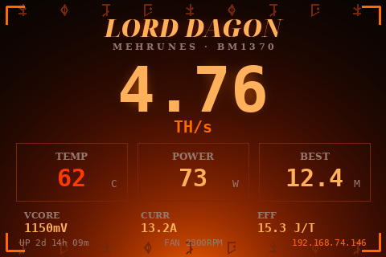
A cinematic, Oblivion-like deadlands scene became the next direction — black spires, a blood-red sun, rivers of lava — fitted to the screen with translucent panels so the stats stayed readable.
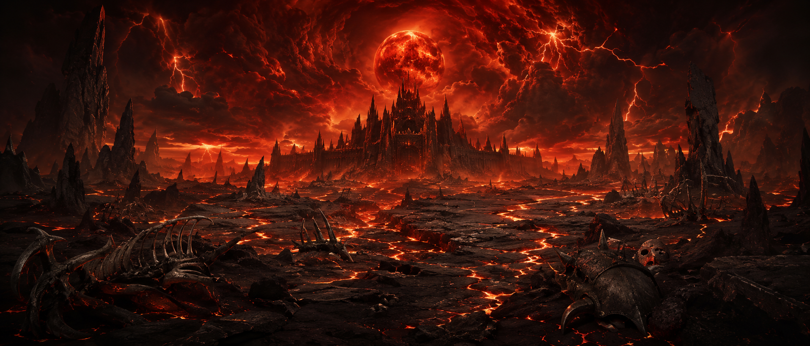
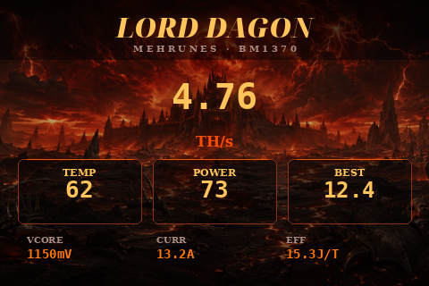
Then the real idea landed: don't use a landscape — make the centerpiece a living Sigil Stone, the molten heart of an Oblivion-like gate, suspended on an obsidian altar with lava streaming through it.
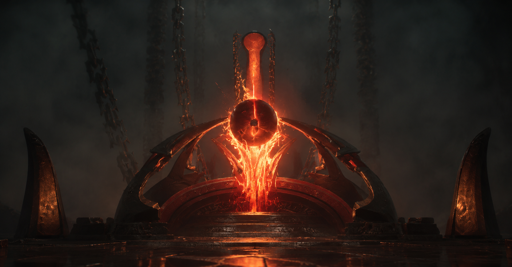
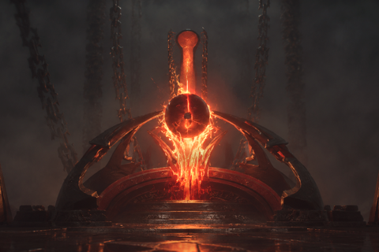
A static altar is nice. A burning one is better. The screen is driven by LVGL, so the lava is real animation: a heat-masked flicker field scrolls upward through the central column, while the reflection on the wet floor below flickers downward — a mirrored fire, looping about once a second.
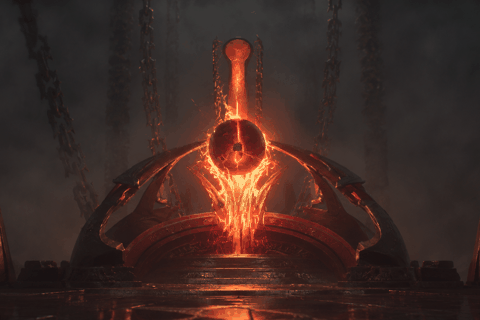
The live data wraps the edges so the sigil stays clear in the center. Four themed gold corners — hashrate, temperature, best difficulty, efficiency — frame two plain digital readout columns: power / frequency / core-voltage on the left, accepted / rejected / blocks on the right.
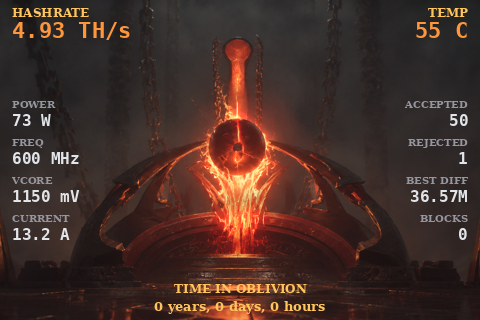
And a custom flourish that doesn't exist in stock firmware: a persistent TIME IN OBLIVION counter — total lifetime mining time in years, days and hours — saved to the device's NVS so it survives reboots. The lifetime accepted-share count is persisted the same way (accumulated by delta, so pool reconnects never lose a share).
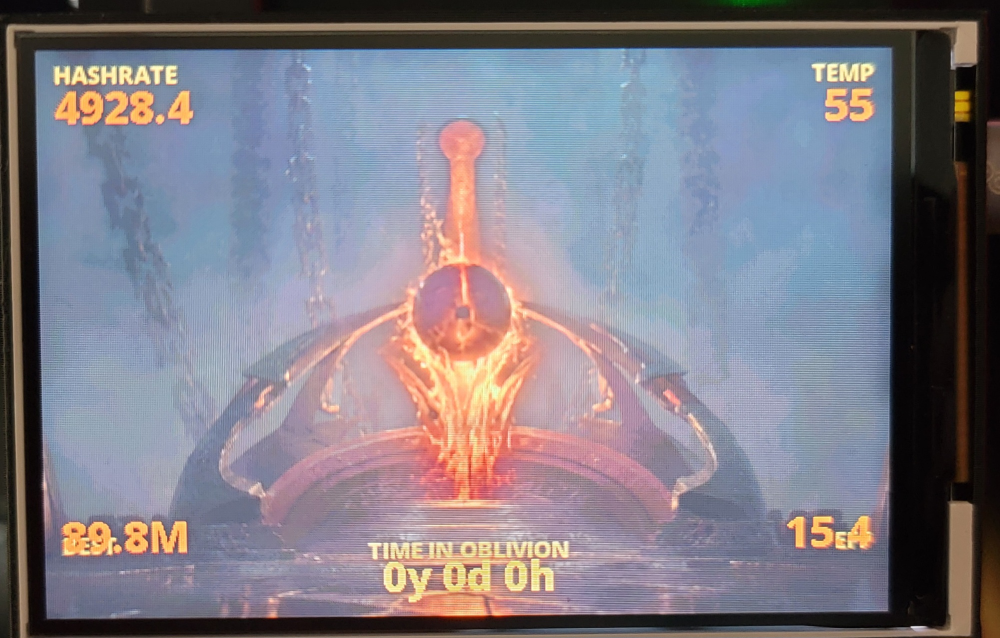
The BM1370s have headroom. The firmware's frequency and voltage option lists were expanded to the full safe range so tuning could be done live from the browser, while the boot default stays conservative.
| Setting | Value |
|---|---|
| Stock / boot default | 600 MHz · 1150 mV · ~4.8 TH/s |
| Exposed range | 500–800 MHz · 1100–1400 mV |
| Running at (stable) | 700 MHz · 1280 mV · ~5.7 TH/s · 0 rejects |
| Cooling | PID auto-fan @ 55 °C target · 70 °C cutoff |
Auto-fan keeps the chips around 55 °C; at 700 MHz the fan barely needs to work and rejected shares stay at zero — a clean, stable overclock.
Solo mining is a lottery with astronomical odds. But if this altar ever solves a block, it earns a moment worthy of it: the whole screen erupts into the flared sigil, the orb blazing white-gold, with two words across it.
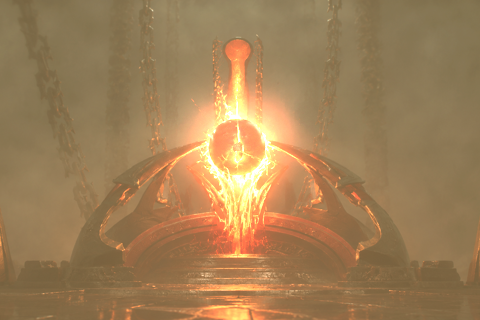
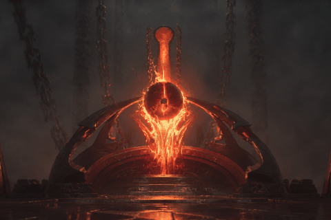
It stays up as a trophy until the device is rebooted — and the BLOCKS counter, written to permanent storage, ticks to 1 and stays there forever.
From a bricked box to a fully custom, source-built mining altar:
| Panel fix | 480×320 ST7796 driver, correct geometry & color pipeline |
| Theme | Mehrunes-Dagon-adjacent sigil altar, hand-fitted to the panel |
| Animation | upward lava + downward floor reflection, looping |
| Custom data | TIME IN OBLIVION + lifetime accepted shares (NVS-persisted) |
| Boot | "SUMMONING THE SIGIL…" → solid load → stats fade in |
| Block event | full-screen SIGIL FOUND climax |
| Tuning | 500–800 MHz range exposed, auto-fan + thermal cap |
It mines solo to its owner's wallet, stable and cool, and waits in the dark — counting its time in oblivion.